Spectrogram: Normalization and Cleaning#
This tutorial demonstrates two groups of spectrogram post-processing tools available in gwexpy:
API |
Purpose |
|---|---|
|
Convert raw power to SNR or relative units |
|
Remove glitches, trends, and persistent lines |
Prerequisites: Spectrogram Basics
import warnings
warnings.filterwarnings("ignore", category=UserWarning)
warnings.filterwarnings("ignore", category=DeprecationWarning)
import matplotlib.pyplot as plt
import numpy as np
from gwexpy.timeseries import TimeSeries
plt.rcParams["figure.figsize"] = (12, 4)
1. Synthetic Data#
We build a 2-minute strain time series containing:
Stationary Gaussian noise with a slowly drifting amplitude (non-stationarity)
Persistent narrowband line at 60 Hz (power-line coupling)
Transient glitches at 15 s, 45 s, and 90 s
# ── Reproducible seed ────────────────────────────────────────────────────────
rng = np.random.default_rng(42)
DURATION = 120 # seconds
FS = 512 # Hz
FFTLEN = 4.0 # s
STRIDE = 2.0 # s
t = np.arange(0, DURATION, 1 / FS)
# Base: flat noise (simulate whitened strain)
base_noise = rng.normal(0, 1.0, len(t))
# Add persistent narrowband line at 60 Hz (power line)
line60 = 3.0 * np.sin(2 * np.pi * 60 * t)
# Add slowly drifting broadband noise floor (non-stationary trend)
trend = 1.0 + 0.5 * np.sin(2 * np.pi * t / DURATION)
# Add a few transient glitches (excess-power bursts)
glitch_times = [15.0, 45.0, 90.0]
glitch_signal = np.zeros_like(t)
for gt in glitch_times:
idx = int(gt * FS)
width = int(0.05 * FS)
glitch_signal[idx : idx + width] += rng.normal(0, 8.0, width)
strain = (base_noise * trend) + line60 + glitch_signal
ts = TimeSeries(strain, dt=1.0 / FS, name="STRAIN", unit="strain")
spec = ts.spectrogram2(FFTLEN, overlap=FFTLEN / 2)
print("Spectrogram shape (time × freq):", spec.shape)
print("Time bins:", spec.shape[0], " | Freq bins:", spec.shape[1])
Spectrogram shape (time × freq): (60, 1025)
Time bins: 60 | Freq bins: 1025
2. Baseline Spectrogram#
The raw spectrogram already shows glitches (bright vertical stripes), the 60 Hz line (bright horizontal stripe), and the time-varying noise floor.
import warnings
with warnings.catch_warnings():
warnings.simplefilter('ignore')
_plt5 = spec.plot(norm="log", figsize=(12, 4))
ax = _plt5.gca()
ax.set_title("Raw spectrogram")
_plt5.colorbar(label="Power [strain²/Hz]")
with warnings.catch_warnings():
warnings.filterwarnings("ignore", message="This figure includes Axes that are not compatible with tight_layout")
plt.tight_layout()
plt.show()
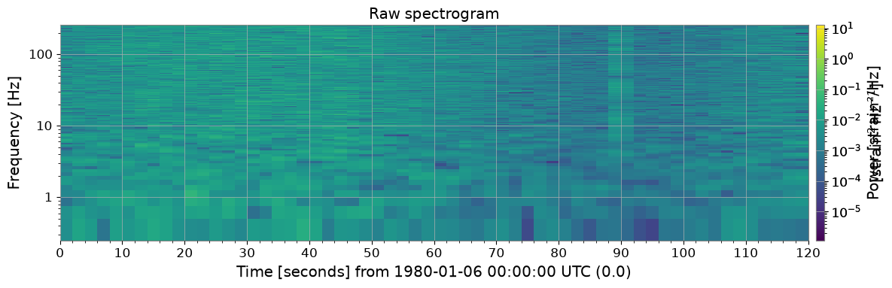
3. Normalization#
3a. SNR Spectrogram (method='snr')#
The most common normalization for transient searches: divide each time slice by
the median PSD along the time axis.
Result is a dimensionless SNR² map where the stationary background ≈ 1.
import warnings
with warnings.catch_warnings():
warnings.simplefilter('ignore')
# ── SNR normalization ─────────────────────────────────────────────────────────
# Each time slice is divided by the median PSD along the time axis.
# Result: dimensionless SNR² (≈ 1 for stationary background).
spec_snr = spec.normalize(method="snr")
fig, axes = plt.subplots(1, 2, figsize=(14, 4))
_pc0 = axes[0].pcolormesh(spec.times.value, spec.frequencies.value, spec.value.T, norm=__import__("matplotlib.colors", fromlist=["LogNorm"]).LogNorm(), cmap="viridis", shading="auto")
fig.colorbar(_pc0, ax=axes[0], label="Power [strain²/Hz]")
spec_snr.plot(ax=axes[1], norm="log", vmin=0.1, vmax=100)
axes[1].set_title("SNR spectrogram (normalize='snr')")
fig.colorbar(next((c for c in axes[1].get_children() if hasattr(c, "get_clim")), None) or __import__("matplotlib.cm", fromlist=["ScalarMappable"]).ScalarMappable(), ax=axes[1], label="SNR² [dimensionless]")
with warnings.catch_warnings():
warnings.filterwarnings("ignore", message="This figure includes Axes that are not compatible with tight_layout")
plt.tight_layout()
plt.show()
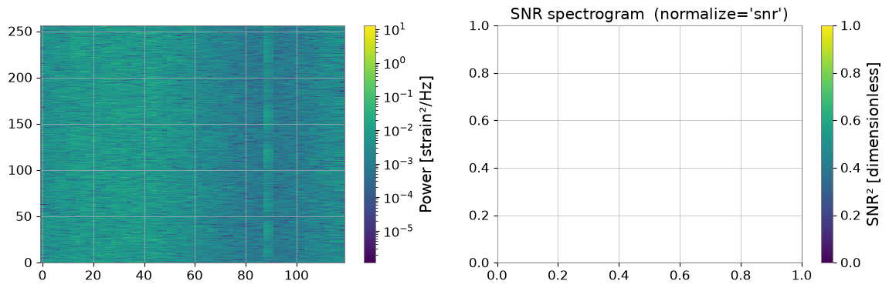
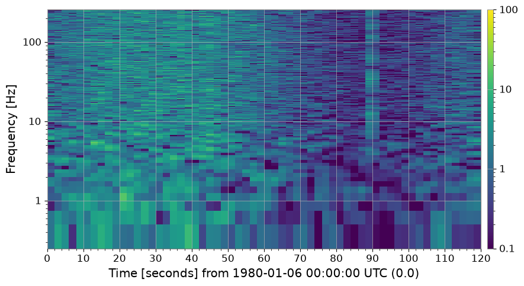
3b. Other Normalization Methods#
|
Denominator |
|---|---|
|
Median PSD per frequency bin (identical to |
|
Mean PSD per frequency bin |
|
Nth-percentile PSD (controlled by |
import warnings
with warnings.catch_warnings():
warnings.simplefilter('ignore')
# ── Compare normalization methods ─────────────────────────────────────────────
methods = ["median", "mean", "percentile"]
fig, axes = plt.subplots(1, 3, figsize=(18, 4))
for ax, m in zip(axes, methods):
kw = {"percentile": 75.0} if m == "percentile" else {}
spec_n = spec.normalize(method=m, **kw)
spec_n.plot(ax=ax, norm="log", vmin=0.1, vmax=100)
label = "percentile=75" if m == "percentile" else ""
ax.set_title(f"method='{m}' {label}")
fig.colorbar(next((c for c in ax.get_children() if hasattr(c, "get_clim")), None), ax=ax, label="SNR² []")
plt.suptitle("Normalization methods comparison", fontsize=13)
with warnings.catch_warnings():
warnings.filterwarnings("ignore", message="This figure includes Axes that are not compatible with tight_layout")
plt.tight_layout()
plt.show()
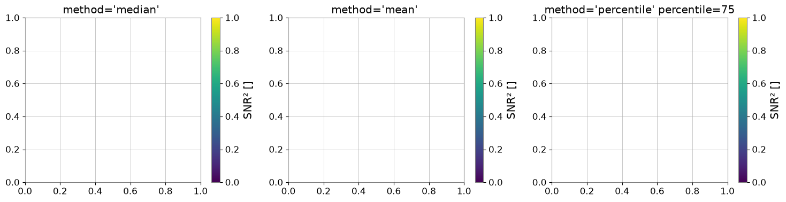
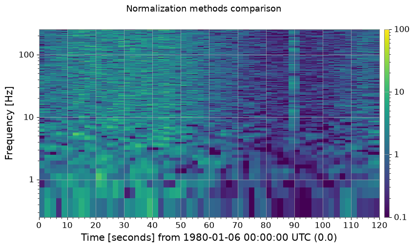
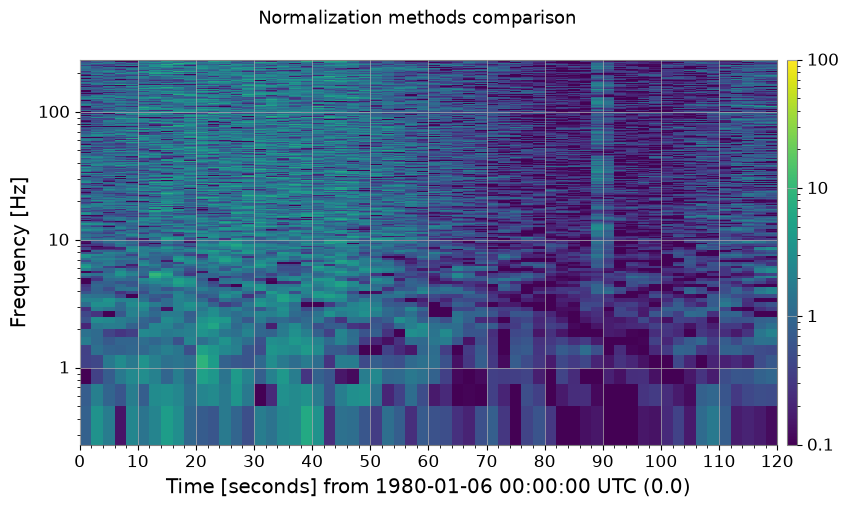
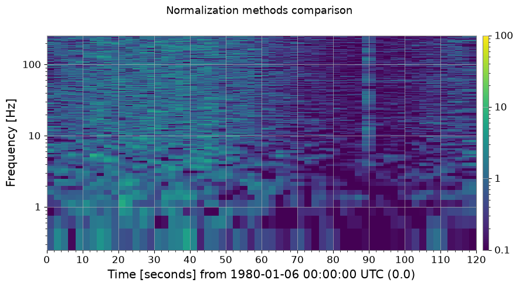
3c. Reference Normalization (method='reference')#
Supply your own reference spectrum — useful when you want to compare against a specific quiet period or an independently measured noise floor.
import warnings
with warnings.catch_warnings():
warnings.simplefilter('ignore')
# ── Reference normalization ───────────────────────────────────────────────────
# Use the first 30 s as a quiet reference segment.
quiet_ts = ts.crop(0, 30)
ref_spec = quiet_ts.spectrogram2(FFTLEN, overlap=FFTLEN / 2)
reference_psd = np.median(ref_spec.value, axis=0) # median over the 30-s window
spec_ref = spec.normalize(method="reference", reference=reference_psd)
fig, ax = plt.subplots(figsize=(12, 4))
spec_ref.plot(ax=ax, norm="log", vmin=0.1, vmax=100)
ax.set_title("Reference-normalized spectrogram (30-s quiet baseline)")
fig.colorbar(next((c for c in ax.get_children() if hasattr(c, "get_clim")), None), ax=ax, label="SNR² []")
with warnings.catch_warnings():
warnings.filterwarnings("ignore", message="This figure includes Axes that are not compatible with tight_layout")
plt.tight_layout()
plt.show()
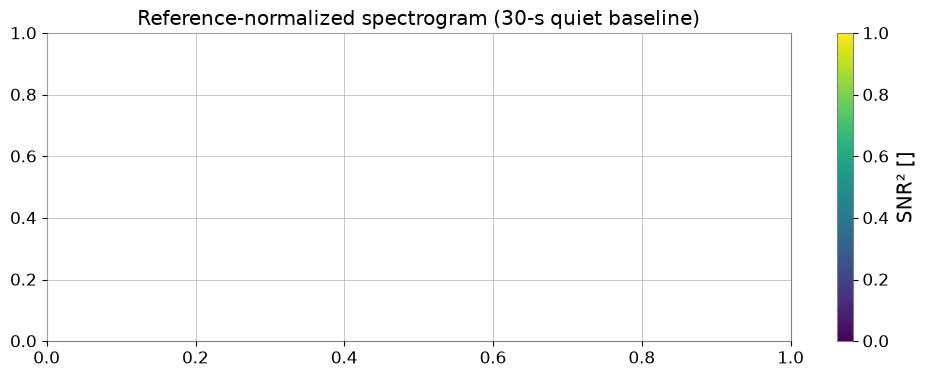
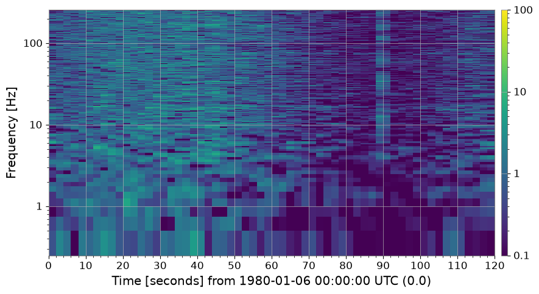
4. Cleaning#
4a. Threshold Cleaning (method='threshold')#
Pixels that exceed median + threshold × MAD (per frequency bin) are
flagged as outliers and replaced. Replacement strategy is controlled by
fill= ('median', 'nan', 'zero', or 'interpolate').
This removes short-duration glitches that appear as bright vertical streaks.
import warnings
with warnings.catch_warnings():
warnings.simplefilter('ignore')
# ── threshold cleaning ────────────────────────────────────────────────────────
# Pixels exceeding median + threshold × MAD are replaced.
spec_thr, mask = spec_snr.clean(method="threshold", threshold=5.0, return_mask=True)
print(f"Flagged pixels: {mask.sum()} / {mask.size}"
f" ({100 * mask.mean():.2f} %)")
fig, axes = plt.subplots(1, 2, figsize=(14, 4))
spec_snr.plot(ax=axes[0], norm="log", vmin=0.1, vmax=100)
axes[0].set_title("SNR spectrogram (before threshold clean)")
fig.colorbar(next((c for c in axes[0].get_children() if hasattr(c, "get_clim")), None) or __import__("matplotlib.cm", fromlist=["ScalarMappable"]).ScalarMappable(), ax=axes[0], label="SNR²")
spec_thr.plot(ax=axes[1], norm="log", vmin=0.1, vmax=100)
axes[1].set_title("After threshold clean (threshold=5 MAD)")
fig.colorbar(next((c for c in axes[1].get_children() if hasattr(c, "get_clim")), None) or __import__("matplotlib.cm", fromlist=["ScalarMappable"]).ScalarMappable(), ax=axes[1], label="SNR²")
with warnings.catch_warnings():
warnings.filterwarnings("ignore", message="This figure includes Axes that are not compatible with tight_layout")
plt.tight_layout()
plt.show()
Flagged pixels: 2096 / 61500 (3.41 %)
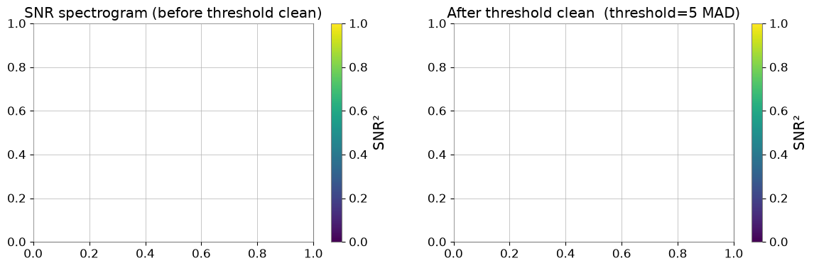
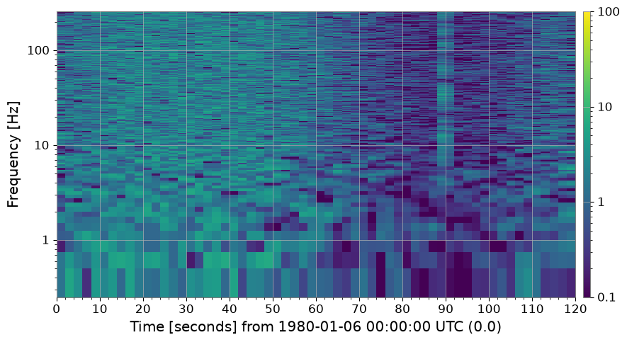
4b. Rolling-Median Detrending (method='rolling_median')#
Divide each column by a running median along the time axis.
This removes slow non-stationary trends without distorting short-duration features.
import warnings
with warnings.catch_warnings():
warnings.simplefilter('ignore')
# ── rolling-median cleaning ───────────────────────────────────────────────────
# Divide by a rolling median along the time axis to remove slow trends.
spec_roll = spec.clean(method="rolling_median", window_size=10)
fig, axes = plt.subplots(1, 2, figsize=(14, 4))
spec.plot(ax=axes[0], norm="log")
axes[0].set_title("Raw spectrogram")
fig.colorbar(next((c for c in axes[0].get_children() if hasattr(c, "get_clim")), None) or __import__("matplotlib.cm", fromlist=["ScalarMappable"]).ScalarMappable(), ax=axes[0], label="Power")
spec_roll.plot(ax=axes[1], norm="log")
axes[1].set_title("After rolling-median detrend (window=10 bins)")
fig.colorbar(next((c for c in axes[1].get_children() if hasattr(c, "get_clim")), None) or __import__("matplotlib.cm", fromlist=["ScalarMappable"]).ScalarMappable(), ax=axes[1], label="Normalised power []")
with warnings.catch_warnings():
warnings.filterwarnings("ignore", message="This figure includes Axes that are not compatible with tight_layout")
plt.tight_layout()
plt.show()
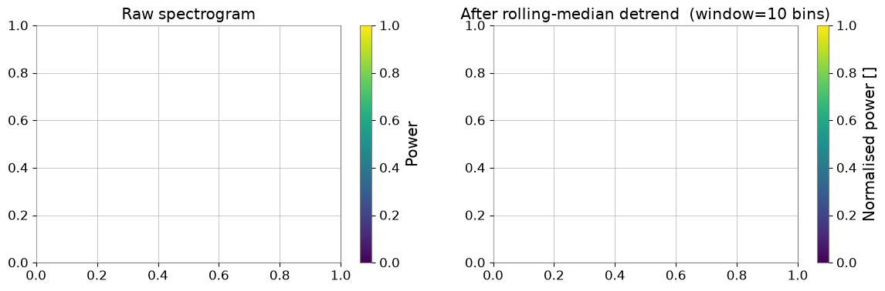
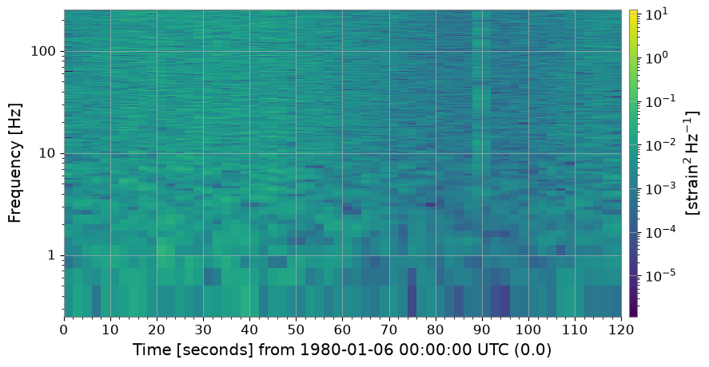
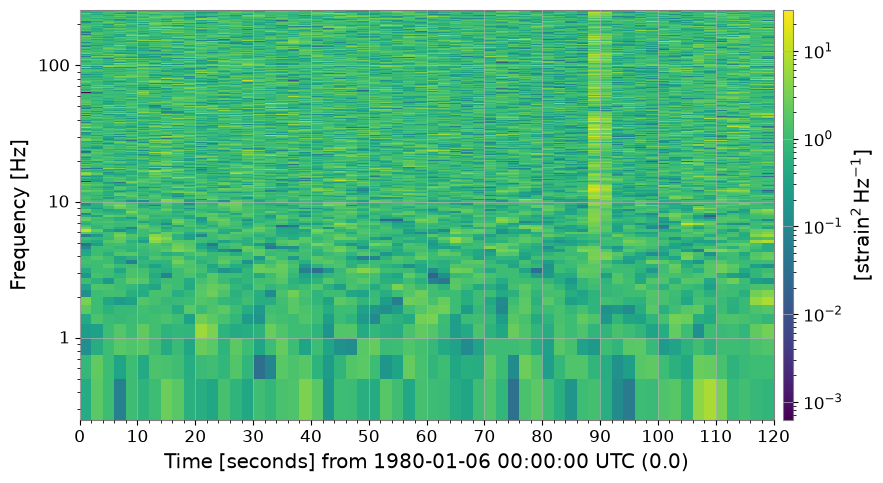
4c. Persistent Line Removal (method='line_removal')#
A frequency bin is flagged as a persistent line if it exceeds
amplitude_threshold × global_median for more than
persistence_threshold fraction of time bins.
Detected bins are replaced with their time-median.
import warnings
# ── line-removal cleaning ─────────────────────────────────────────────────────
# Detect persistent narrowband lines and replace with column median.
spec_noline, line_indices = spec_snr.clean(
method="line_removal",
persistence_threshold=0.8,
amplitude_threshold=3.0,
return_mask=True,
)
# line_indices is a bool mask here; retrieve actual frequency values
freq_axis = spec.frequencies.value
if hasattr(line_indices, "sum"): # ndarray mask
flagged_freqs = freq_axis[np.any(line_indices, axis=0)]
else:
flagged_freqs = freq_axis[line_indices]
print("Detected line frequencies [Hz]:", np.round(flagged_freqs, 1))
fig, axes = plt.subplots(1, 2, figsize=(14, 4))
spec_snr.plot(ax=axes[0], norm="log", vmin=0.1, vmax=100)
axes[0].set_title("SNR spectrogram (with 60 Hz power line)")
fig.colorbar(
next((c for c in axes[0].get_children() if hasattr(c, "get_clim")), None)
or __import__("matplotlib.cm", fromlist=["ScalarMappable"]).ScalarMappable(),
ax=axes[0],
label="SNR²",
)
spec_noline.plot(ax=axes[1], norm="log", vmin=0.1, vmax=100)
axes[1].set_title("After line-removal clean")
fig.colorbar(
next((c for c in axes[1].get_children() if hasattr(c, "get_clim")), None)
or __import__("matplotlib.cm", fromlist=["ScalarMappable"]).ScalarMappable(),
ax=axes[1],
label="SNR²",
)
with warnings.catch_warnings():
warnings.filterwarnings(
"ignore",
message="This figure includes Axes that are not compatible with tight_layout",
)
plt.tight_layout()
plt.show()
Detected line frequencies [Hz]: []
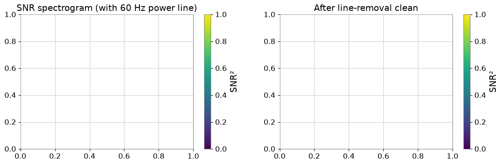
4d. Full Cleaning Pipeline (method='combined')#
Runs threshold → rolling-median → line-removal in sequence.
Recommended as a one-stop solution for commissioning-style data quality checks.
import warnings
with warnings.catch_warnings():
warnings.simplefilter('ignore')
# ── combined pipeline ─────────────────────────────────────────────────────────
# threshold → rolling_median → line_removal in one call.
spec_clean = spec.clean(
method="combined",
threshold=5.0,
window_size=10,
persistence_threshold=0.8,
amplitude_threshold=3.0,
)
fig, axes = plt.subplots(1, 2, figsize=(14, 4))
spec.plot(ax=axes[0], norm="log")
axes[0].set_title("Raw spectrogram")
fig.colorbar(next((c for c in axes[0].get_children() if hasattr(c, "get_clim")), None) or __import__("matplotlib.cm", fromlist=["ScalarMappable"]).ScalarMappable(), ax=axes[0], label="Power")
spec_clean.plot(ax=axes[1], norm="log")
axes[1].set_title("Fully cleaned spectrogram (method='combined')")
fig.colorbar(next((c for c in axes[1].get_children() if hasattr(c, "get_clim")), None) or __import__("matplotlib.cm", fromlist=["ScalarMappable"]).ScalarMappable(), ax=axes[1], label="Normalised power []")
with warnings.catch_warnings():
warnings.filterwarnings("ignore", message="This figure includes Axes that are not compatible with tight_layout")
plt.tight_layout()
plt.show()
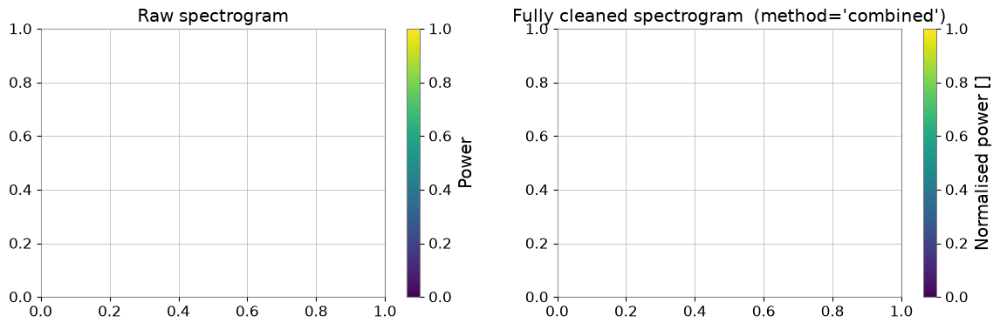
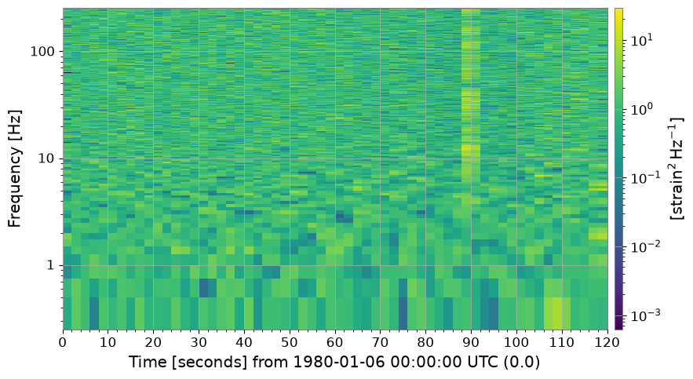
5. Summary#
All methods and their purposes:
print("=" * 62)
print(f"{'Method':<22} {'Description':<38}")
print("-" * 62)
rows = [
("normalize('snr')", "÷ median PSD → SNR² map"),
("normalize('median')", "÷ median PSD (alias for snr)"),
("normalize('mean')", "÷ mean PSD"),
("normalize('percentile')","÷ Nth-percentile PSD"),
("normalize('reference')", "÷ user-supplied reference spectrum"),
("clean('threshold')", "Replace MAD-outlier pixels"),
("clean('rolling_median')","Divide by rolling-median trend"),
("clean('line_removal')", "Remove persistent narrowband lines"),
("clean('combined')", "threshold → rolling_median → line_removal"),
]
for m, d in rows:
print(f" {m:<20} {d}")
print("=" * 62)
==============================================================
Method Description
--------------------------------------------------------------
normalize('snr') ÷ median PSD → SNR² map
normalize('median') ÷ median PSD (alias for snr)
normalize('mean') ÷ mean PSD
normalize('percentile') ÷ Nth-percentile PSD
normalize('reference') ÷ user-supplied reference spectrum
clean('threshold') Replace MAD-outlier pixels
clean('rolling_median') Divide by rolling-median trend
clean('line_removal') Remove persistent narrowband lines
clean('combined') threshold → rolling_median → line_removal
==============================================================